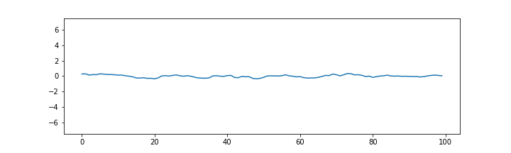
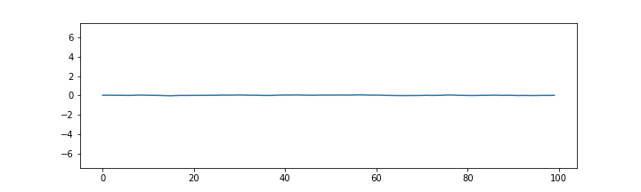

Time series concepts and models
Contents
Time series concepts and models¶
Definition: A time series is a collection of random variables indexed by time , i.e.
In this class we will only deal with discrete time series, i.e. where \(t\) is discrete as above. This is common in macroeconomics. In finance, continuous time series are often more useful/relevant. Equation (1) is also refered to stochastic process, or stochastic sequence (some authors reserve sequence for discrete and process – for continuous time series)
unlike cross-sectional data, time series are ordered sequentially - there is before and after and observations can be close or far away from each other.
In practice, we work with observed finite realizations of stochastic processes:
\[\{ z_1, z_2, ..., z_T \} = \{z_t\}_{t=1}^T\]
Note
We use time series for both the process and the realization
the set \(\{ z_1, z_2, ..., z_T \}\) is characterized by its joint distribution.
the distribution of the full stochastic process is specified if for an arbitrary set of indices we know the joint distribution of the respective set
Example: \(\{z_t \}_{t=-\infty}^{\infty}\) is a Gaussian process if any finite subset \(\{ z_{t_1}, z_{t_2}, ..., z_{t_k} \}\) has a joint Gaussian distribution.
A time series sample \(\{z_t\}_{t=1}^T\) is a single draw from some distribution
sample size of 1???
how do we estimate moments (learn about the underlying distribution)?
in cross-section: data points are independent draws from a common distribution
in \(z_i = \begin{bmatrix}y_i\\x_i\end{bmatrix} \) there could be arbitrarily complicated dependence, but \(z_i\) and \(z_j\) are independent for \(i \neq j\)
sample averages estimate population means
the equivalent in time series is observing muliple ensembles (paths) of the time series
and computing ensemble averages for each \(t\)


Ensamble average with n=100

Ensamble average with n=10000

impossible with one observed path (e.g. one history of quarterly GDP numbers)
can only compute averages over time
for time averages to estimate population means, we need ergodic stationarity
Ergodic stationarity¶
With cross-sectional data we have identical distribution and independence
the related concepts for time series are stationarity and ergodicity
Stationarity¶
Definition: The process \(\{z_t\}_{t=1}^T\) is strictly (or strongly) stationary if its distribution is time invariant.
This means that if we take an arbitraty set of time indices \({t_1, t_2, .., t_k}\) for some \(k\), the joint distribution of \(z_{t_1}, z_{t_2}, ,..., z_{t_k}\) stays the same if we shift all indices by the same number of time units, i.e. it is the same as the joint distribution of \(z_{t'_1}, z_{t'_2}, ,..., z_{t'_k}\) for \(t' = t + h\) for any \(h\).
Definition: The process \(\{z_t\}_{t=1}^T\) is covariance (or weakly) stationary if the first two moments of the joint distribution exist and are time invariant
That is, the mean and covariance do not change with the time index:
for \(t' = t+h\), \(k \geq 0\)
also wide-sense stationary
with \(k=0\) the variance of \(z_t\) is constant
set \(t'=t-k\). Then
stationarity is a form of constancy of the properties of the process
needed in order to be able to learn something about those properties
strong stationarity is usually too strong an assumption
covariance stationarity is typically enough
if the first two moments exist, strong stationarity implies weak stationarity
Example: (strictly but not weakly stationary)
iid \(z_t\) with a Cauchy distribution is strictly stationary but has no finite moments and is therefore not weakly stationary.
strong and weak stationarity coincide when \(z_t\) is a Gaussian process
with weak stationarity alone we can still learn first and second order moments (if not the full distribution)
if \(z_t\) is iid then it is strongly stationary
Ergodicity¶
independence of observations implies each contains unique information
dependence means that some information is shared
for information to accumulate as sample size grows, some unique information must exist
i.e. dependence must not be too strong
ergodicity is the property that more distant variables in the sequence are closer to being independent
(Ergodic theorem) For ergodic and stationary processes, time averages converge to population means
functions of ergodic and stationary processes are also ergodic and stationary
time averages of such functions converge to respective population averages
Example: If \(\{z_t\}\) is stationary and ergodic, then \(\{z_t z_t\}\) is also stationary and ergodic.
Therefore, the time averages of \(z_t\) and \(z_t z_t\) converge to \(\operatorname{E}z_t\) and \(\operatorname{E}z_tz_t\)
Example: (stationary but not ergodic)
with:
\(x_t\) iid, \(\operatorname{E}x_t = 0\)
\(y\) independent of \(x_t\) and \(\operatorname{E}y = 0\), \(\operatorname{var}(y) > 0\)
since \(x_t\) is iid:
since \(y\) is the same for all \(t\):
Therefore:
On the other hand, the (ensemble) mean of \(z_t\) is
This is because dependence between \(z_t\) and \(z_{t-k}\) does not decrease as \(k\) increases:
due to the independence among \(x_t\), \(x_{t-k}\), and \(y\)
Important
The ergodic theorem is important because it implies that, in time series settings, a single long sample becomes representative of the whole data-generating process similar to how, in a cross section, a large iid sample becomes representative of the whole population.
Note
A related (to ergodicity) property is called mixing. Defining formally either one is beyond the scope of this course. Informally, a useful way to think about the difference between mixing and ergodicity can be found in Ch 14.7 of B. Hansens’s Econometrics: mixing means that more distant elements of the time series sequence are closer to being independent, while ergodicity means that this is true only on average. Therefore, mixing implies ergodicity, but ergodicity does not imply mixing.
Dependence¶
sample
in cross section - independent
in time series - dependent
What does it mean for two variables \(z_1\) and \(z_2\) to be independent?
Let \(f(z_1, z_2)\) be the joint distribution of \(z_1\) and \(z_2\). If \(z_1\) and \(z_2\) are independent, then
Moreover, from the definition of conditional distribution
it follows that if \(z_1\) and \(z_2\) are independent,
When \(z_1\) and \(z_2\) are independent¶
observing \(z_2\) tells us nothing about \(z_1\), no new information is gained, beyond the one already contained in the marginal distribution of \(z_1\).
This is a defining property of a random sample: each observation is independent from all other observations, and is therefore an unique source of information.
When \(z_1\) and \(z_2\) are dependent¶
observing \(z_2\) tells us something about \(z_1\), and vice versa – \(z_1\) is informative about \(z_2\).
if all \(z\)’s are mutually dependent, the larger the number of observations, the smaller is the information value of each individual observation, given all other observations.
Time series models are largely models of the temporal dependence
This has various important implications. One is that standard results from probability theory, such as the law of large numbers or the central limit theorem, are not directly applicable. Another is that we need to somehow model the temporal dependence
Time series models¶
aim to capture complex temporal dependence
build by combining processes with simple dependence structure - innovations
Innovations¶
Gaussian iid noise
iid noise
stationary martingale difference
white noise
Definition: The innovation process \(\{\varepsilon_t\}\) is an (Gaussian) iid noise process if it is iid (and Gaussian)
time series model for the observed data \({x_t}\) is a specification of the joint distributions (or possibly only the means and covariances) of a sequence of random variables \(\{Z_t\}\) of which \(\{z_t\}\) is postulated to be a realization.
Definition: The innovation process \(\{\varepsilon_t\}\) is a martingale difference process if
\(\operatorname{E}\left( \varepsilon_t \right) = 0\) (by LIE)
\(\operatorname{cov}(\varepsilon_t, \varepsilon_{t-h}) =0 \), for all \(h\neq0\) (also by LIE)
if also covariance stationary: \( \operatorname{var}(\varepsilon_t) = \sigma^2_{t} = \sigma^2 \)
Definition: The innovation process \(\{\varepsilon_t\}\) is a white noise process if
stronger than covariance stationary (uncorrelated)
weaker than iid noise (not necessarily independent or identically distributed)
weaker than stationary martingale difference
uncorrelated and Gaussian => Gaussian iid
Forms of (in)dependence¶
with iid innovations the future is completely independent from the past history
the past contains no information about the future (completely unpredictable)
conditional distribution equal to the unconditional one
with m.d. innovations the mean in the future is completely independent from the past history
the past contains no information about the mean (the mean is unpredictable)
conditional mean equals the unconditional mean
for white noise innovations the mean in the future is linearly independent from the past history
linear functions of the past contain no information about the mean (the mean is linearly unpredictable)
Examples of time series models¶
MA(1) model
AR (1) model:
ARMA(1,1) model: